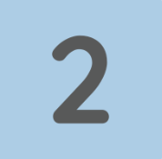

다온입시컨설팅은 100% 예약제로 운영되어 당일 컨설팅 변경 및 취소는 당일 회차 차감됩니다.
1회성 컨설팅 (수시/정시/분석 컨설팅)
컨설팅 이전에 사전 서류 분석 작업이 진행되므로 예약 취소를 원하시면
예약 날짜 5일 전까지 연락 바랍니다.
분석이 시작된 경우 환불이 불가능합니다.

다회성 컨설팅 (정기컨설팅, 면접컨설팅, 자소서 컨설팅)
예약일 15일전까지: 100%, 10일전까지: 70%, 7일전까지: 50%, 5일전까지: 환불 불가
5일전 부터는 정기컨설팅 사전작업이 완성되므로, 환불이 불가능합니다.